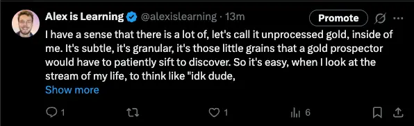
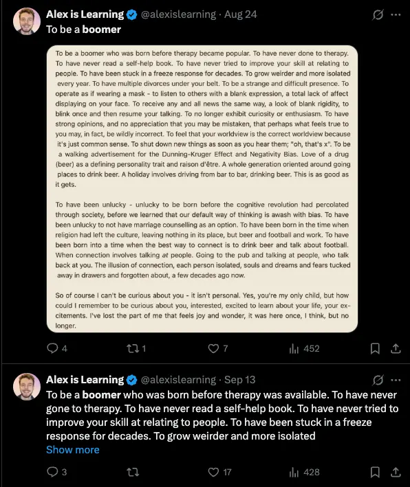

- 2025-10-25
- Note, this started as morning pages and now has become something I’m adding to throughout the day
1 - Writing more, why?
- I maybe want to start writing more. I maybe want to write more substacks.
- (E.g., I wrote Should I intentionally tweet better? 2025-10-24 yesterday)
- Ok, what is the “maybe” here? That smells like bullshit to me.
- What do I want?
I want to take myself more seriously
- I want to take myself more seriously. What does that mean? How does that relate to substack?
- There have been times where I’ve felt like “well, I have nothing to say, nothing to write about”. And then, I’ve sat down to do something like “hit publish”, which we did at Ship It Week, only to discover that of course I have things to say, of course I have things in my system. I’m always a guy who has a bunch of recently lived experience, aliveness in my system, resonances, nascent insights, memories, etc.
- So, I want to take my nascent insights more seriously. I have a sense that there is a lot of, let’s call it unprocessed gold ore inside of me. It’s subtle, it’s granular, it’s those little grains that a gold prospector would have to patiently sift to discover. So it’s easy when I look at the stream of my experience to me like “idk dude, nothing there but a bunch of mud”. But be patient, slow down, sift through the dregs for a while, and you’ll find a grain of gold, and then some more, and perhaps your eyes adjust and you can spot them more quickly, and perhaps after a while you have enough to smelt some small thing, a little ring or pendant, not profound, not a weighty ingot, but still, something meaningful to you, perhaps to a loved one or two as well.
- And so then you can make your life be about this process of finding the gold, and as time passes you’ll become more and more golden, perhaps one day you will even be decked out in golden armour and cast a lovely golden glow whereever you are (to be a little hyperbolic with it).
- By default, I live in a muddy stream, a feeling that there’s nothing of value here yet, that I need to look out there, see if witnessing someone else’s bounty will cause some change in me. But perhaps the path is always to look within, to honour the… blah blah, something something, this is starting to feel too effortful. First draft vibes innit just morning pages innit
I don’t want to write more substacks
- “Writing substacks” is not a terminal goal. I don’t want to write substacks for the sake of writing substacks.
- I want to have more important things to share. I want to have more profound insights where I’m like “holy shit, I need to write about this”, and I write it in a frenzy - this is how all my best stuff has been written
- And how do you have more profound insights? Perhaps it’s as simple as showing up at the stream every day and patiently sifting through the mud.
- And how do you enjoy that process enough to do it daily? Well, one way could be by cherishing what you discover along the way. I feel really pleased with this gold prospector analogy, for example. Perhaps I could turn it into a tweet, a way to share it, make it relational, make it real.
- Sift through mud
- Cherish and share the little grains you find
- Over time, smelt the grains into things of beauty and value
Ok then, let’s polish and tweet something
I have a sense that there is a lot of, let’s call it unprocessed gold, inside of me. It’s subtle, it’s granular, it’s those little grains that a gold prospector would have to patiently sift to discover. So it’s easy, when I look at the stream of my life, to think like “idk dude, nothing there but a bunch of mud”. But if I’m patient, if I slow down, if I sift through the dregs for a while, I’ll spot a grain, and then a few more, and perhaps with time my eyes will adjust and I’ll find them more quickly, and perhaps after a while I’ll have enough to smelt some small thing, a little ring or pendant, not profound, not a weighty ingot, but still, something meaningful to me, perhaps to a loved one or two as well.
And with time, as my store of golden trinkets grows, I will stop doubting the stream, will stop feeling that I must look elsewhere; the beauty of this stream will be self-evident, and I will always have access to it, this profound source of wealth, ever-present, ever-changing. I will wear my suit of golden armour and cast a warm light wherever I go.
Tweeted
Boom, tweeted. That was a very satisfying writing process! Tweaked a whole bunch. E.g., the final sentence was “I will wear a suit of golden armour and cast a warm glow wherever I go.”, and I didn’t like how “glow” and “go” rhymed right at the end, it felt kinda trite. And I changed it from “a suit” to “my suit” which felt better somehow. I really enjoy this shit!
How many likes do I think this’ll get?
- My median tweet gets 9 likes (as per Should I intentionally tweet better? 2025-10-24)
- I’d be sad if this didn’t get 20 likes, because this is easily 2x better than my median tweet
- It’s long though, and I don’t think it’s that grabby. It’s like, who is this guy, what’s he on about

- Like, the “show more” fight kinda fuck me, I don’t think this opening is all that grabby
- Also, it’s not clear straight away that this is about writing morning pages
- It’s a little like, over-egged, over-the-top, idk
- I think the little ring or pendant bit. I like that the “stop doubting the stream, stop looking externally” rhymes with a lot of stuff in my head (maybe I should have pointed at these more clearly)
- It feels maybe vague and non-actionable, but then again, it also feels like the “wearing golden armour and casting a light” is a nice like, aspirational image
Stuff like this can do ~not that well
- I’m really quite proud of 01. To be a boomer but stuff like this can be non-attention-grabbing enough for twitter IMO

- Like, you’re scrolling and see this and are invited to slow down and read a whole-ass thing, much easier to scroll away
- I don’t necessarily care - I’m proud of today’s golden trinket, it feels like an important part of the process, and I don’t think I could have forced it to be any other kind of thing
Pride
- I’ve read the above thing (which I’ve now ported to a vignette - 14. Gold prospecting) twice since publishing it and I feel proud of it! I like how it ends, I like the feeling it gives me. Good shit
Length
- That’s not a tweet, it’s a vignette. Maybe if I write a vignette, also finding some tweet-sized things within it
2 - Leave me alone (mum)
- I have a lot of “leave me alone” energy at the EA Hotel - like, it’s not just a neutral feeling of not wanting to talk, it’s a prickly spikey feeling of “leave me alone”, and of “you can’t force me to do things”
- When I was a kid/teenager, I’d have to go on walks with my mum 1:1, because she was lonely and sad etc, and I didn’t have any say in the matter, and I’d have to pretend to want to, etc. So I now carry a lot of like, allergy at the idea of being stuck somewhere, of not having a way out, etc
- I’ll work on this with IFS and Focusing etc, it’s cool, I don’t need to “solve” it, you’re allowed to have flaws and quirks, even if they make you kinda unpleasant
Tweeting something
- Tweet:
- In childhood I had to emotionally support lonely family members despite not wanting to (because hey, it’s not fun to be relied upon to support sad adults when you’re a kid), and I still carry a lot of “leave me alone” energy in my system which often makes me a prickly presence
- Nice, this is actually tweet-shaped, rather than a vignette
- Maybe I’ll turn it into a thread
3 - I don’t need to talk to people
- I have a sense that I don’t need to have more conversations atm, conversations with people aren’t where I’m bottlenecked. I feel like I have enough friends, enough mentors, enough stuff in my head, and now I want to go heads down and figure some stuff out, get serious about my wyrd etc
- I have friends who I like talking to/messaging every day, I have weekly calls, mentors etc. Socially I feel full! And that can feel weird when living in a community - arriving already feeling socially full, to me, there’s a sense of “I should make these people a key part of my life, right?” - but currently, I don’t want to
4 - I don’t care about some things
- I don’t care about it being a sunny day. “Omg, it’s a sunny day today, we need to get outside!” has never resonated for me
- I don’t care about views and sights → seeing nice sights on holiday, seeing a “great” view from the top of a hill, seeing the sea etc, this stuff has never felt significant to me. I think that writing, music, romance feel compelling to me in ways that this kind of stuff just doesn’t at all